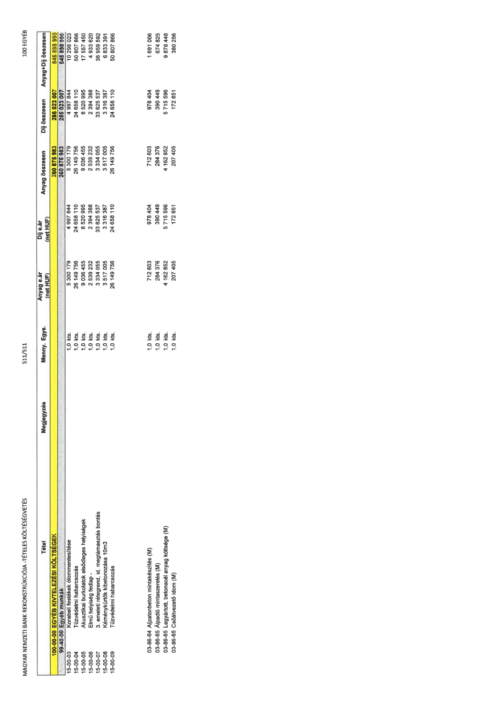

| Tétel | Menny. | Egys. | Anyag e.ár (net HUF) | Díj e.ár (net HUF) | Anyag összesen (net HUF) | Díj összesen (net HUF) | Anyag+Díj összesen (net HUF) |
|---|---|---|---|---|---|---|---|
| 100-00-00 EGYÉB KIVITELEZÉSI KÖLTSÉGEK | NaN | NaN | 0 | 0 | 260 875 983 | 285 023 007 | 545 898 990 |
| 99-40-00 Egyéb munkák | NaN | NaN | 0 | 0 | 260 875 983 | 285 023 007 | 545 898 990 |
| 15-00-03 Korabeli festékek ólommentesítése | 1,0 | kts. | 5 300 179 | 4 997 844 | 5 300 179 | 4 997 844 | 10 298 023 |
| 15-00-04 Tűzvédelmi habarcsozás | 1,0 | kts. | 26 149 756 | 24 658 110 | 26 149 756 | 24 658 110 | 50 807 866 |
| 15-00-05 Akusztikai burkolatok | 1,0 | kts. | 9 036 455 | 8 520 995 | 9 036 455 | 8 520 995 | 17 557 450 |
| 15-00-06 Elmű helyiség fedlap | 1,0 | kts. | 2 539 232 | 2 394 388 | 2 539 232 | 2 394 388 | 4 933 620 |
| 15-00-07 3. emeleti rétegrend | 1,0 | kts. | 3 334 055 | 33 625 537 | 3 334 055 | 33 625 537 | 36 959 592 |
| 15-00-08 Kéménykürtők kibetonozása 10m3 | 1,0 | kts. | 3 517 005 | 3 316 387 | 3 517 005 | 3 316 387 | 6 833 391 |
| 15-00-09 Tűzvédelmi habarcsozás | 1,0 | kts. | 26 149 756 | 24 658 110 | 26 149 756 | 24 658 110 | 50 807 866 |
| 03-86-64 Aljzatbeton mintakészítés (M) | 1,0 | kts. | 712 603 | 978 404 | 712 603 | 978 404 | 1 691 006 |
| 03-86-65 Álpadló mintaszerelés (M) | 1,0 | kts. | 284 376 | 390 449 | 284 376 | 390 449 | 674 825 |
| 03-86-65 Legyártott, betonacél anyag (M) | 1,0 | kts. | 4 162 852 | 5 715 596 | 4 162 852 | 5 715 596 | 9 878 448 |
| 03-86-65 Csőátvezető idom (M) | 1,0 | kts. | 207 405 | 172 851 | 207 405 | 172 851 | 380 256 |
